21 Atmosphere
- Emissions
- CO2
- NO2
- Methane
-
- Attributing Emissions
- Norway's Responsibility21.1 Emissions
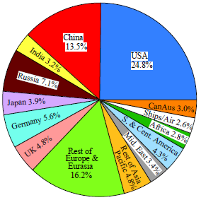
Fig: Cumulative Emissions 1751-2018 by Country/Region
The UK (like the US) is 5X more responsible for global warming than the average nation.
21.1.1 CO2
NOAA Global Monitoring Center
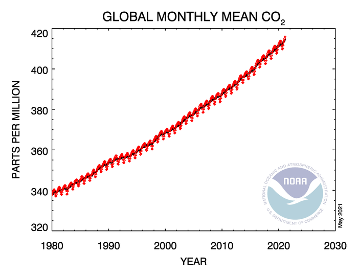 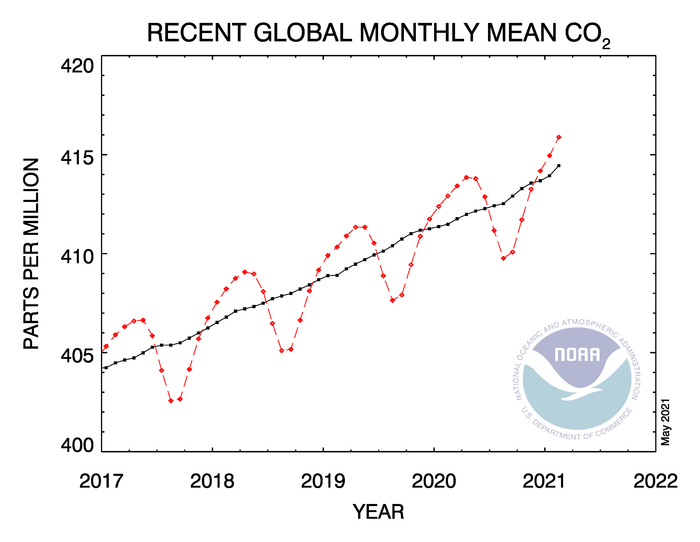
James Hansen
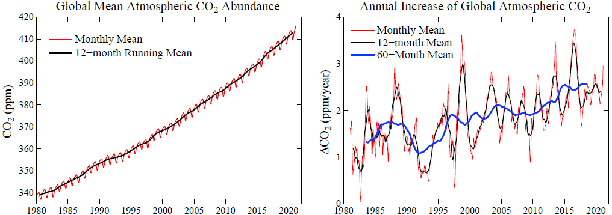
The CO2 growth rate (Fig. 5) is now a bit below the peaks that occur in conjunction with strong El Ninos. However, the CO2 growth rate is not declining. CO2 growth has not even slowed as a result of the reduced economic activity associated with Covid-19.
21.1.1.1 Measurement of CO2
Mauna Loa
Ryan Abstract
A continuous 37 year record of the quiescent CO2 outgassing of Mauna Loa volcano was derived from atmospheric measurements made 6 km downslope of the summit caldera at Mauna Loa Observatory. The volcanic plume is sometimes trapped in the temperature inversion near the ground at night and transported downslope to the observatory. The amount of volcanic CO2 was greatest shortly after the 1975 and 1984 eruptions and then decreased exponentially with decay constants of 6.5 and 1.6 years respectively. Between 1959 and 1973 the decay constant was 6.1 years. The total reservoir mass of CO2 during each of the three quiescent periods was similar and estimated to be between 2 X 108 kg and 5 X 108 kg (0.2 Mt to 0.5 Mt). The 1975 eruption may have been preceded by a small increase in CO2 emissions. A similar increase has occurred since early 1993. Condensation nuclei (CN), presumably consisting of sulfate aerosol, were measured in the volcanic plume throughout the 1974 to 1994 record. The post-1975 period had consistently high levels of CN. Between 1977 and 1980, light-scattering aerosols were detected, coincident with a period of visible fuming at the summit. CN levels after the 1984 eruption were greatly reduced. Two brief periods of low CN emissions during this time correlate with temporary halts or reductions in the rate of summit expansion. These temporary reversals in the inflation of the mountain did not affect the steady exponential decline of the CO2 emissions rate. Upper limits were set on the amounts of H2O, O3, CH4, SO2, aerosol carbon, radon, CO, and H2 present in the plume at various periods between 1974 and 1993. The ratio of SO2 to CO2 was less than 1.8 X 10-3 between 1988 and 1992.
Ryan (1995) Quiescent Outgassing of Mauna Loa Volcano 1958-1994
NOAA Mauna Loa Observatory dto. Measurement Methods
Wet Chemical Analysis
Beck Abstract
More than 90,000 accurate chemical analyses of CO2 in air since 1812 are summarised. The historic chemical data reveal that changes in CO2 track changes in temperature, and therefore climate in contrast to the simple, monotonically increasing CO2 trend depicted in the post-1990 literature on climate-change. Since 1812, the CO2 concentration in northern hemispheric air has fluctuated exhibiting three high level maxima around 1825, 1857 and 1942 the latter showing more than 400 ppm.
Between 1857 and 1958, the Pettenkofer process was the standard analytical method for determining atmospheric carbon dioxide levels, and usually achieved an accuracy better than 3%. These determinations were made by several scientists of Nobel Prize level distinction. Following Callendar (1938), modern climatologists have generally ignored the historic determinations of CO2, despite the techniques being standard text book procedures in several different disciplines. Chemical methods were discredited as unreliable choosing only few which fit the assumption of a climate CO2 connection.
Beck (2007) “180 years of CO2 analysis by chemical methods” (paywall)
Keeling on Beck
Beck questions whether the rise in atmospheric CO2 over the past 50 years is truly unprecedented, citing observations that appear to indicate much higher variability inj the 19th and 20th centuries. If Beck’s contentions were true, they would overthrow 50 years of scientific advance and discovery. Unfortunately for Beck - as well as for humanity - yhe claim’s don’t stand up.
As Keeling grasped already in 1957 - before ha had shown that CO2 was increasing - the earlier chemical measurements exhibit far too much geographic and short-term variability to plausibly be reprenstaive of the background. The variablility of these early measurements must therefore be attributed to “local or regional” factors or poor measurement practice.
Keeling on Beck “180 years of CO2 analysis by chemical methods”
21.1.1.2 Antropogenic CO2
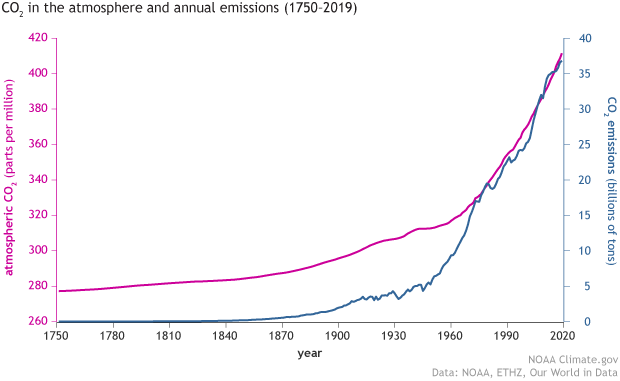
How do we know that recent CO2 increases are due to human activities?
RealClimate Simple Explanation
O’Connor
Abstract: In this work, a semi-empirical relationship of carbon dioxide emissions with atmospheric CO 2 concentrations has been developed that is capable of closely replicating observations from 1751 to 2018. The analysis was completed using data from fossil-fuel-based and land-use change based CO 2 emissions, both singly and together. Evaluation of emissions data from 1750 to 1890 yields a linear CO 2 concentration component that may be attributed to the net flux from land-use changes combined with a rapidly varying component of the terrestrial sink. This linear component is then coupled across the full-time period with a CO 2 concentration calculation using fossil-fuel combustion/cement production emissions with a single, fixed fossil-fuel combustion airborne fraction [AF FF ] value that is determined by the ocean sink coupled with the remaining slowly varying component of the land sink. The analysis of the data shows that AF FF has remained constant at 51.3% over the past 268 years. However, considering the broad range of variables including emission and sink processes influencing the climate, it may not be expected that a single value for AF FF would accurately reproduce the measured changes in CO 2 concentrations during the industrial era.
O’Connor (2020) Modeling of Atmospheric Carbon Dioxide (CO2) Concentrations as a Function of Fossil-Fuel and Land-Use Change CO2 Emissions Coupled with Oceanic and Terrestrial Sequestration (pdf) (pdf SI)
21.1.1.3 C14 Measurement
Basu
We report national scale estimates of CO2 emissions from fossil-fuel combustion and cement production in the United States based directly on atmospheric observations, using a dual-tracer inverse modeling framework and CO2 and Δ14CO2 measurements obtained primarily from the North American portion of the National Oceanic and Atmospheric Administration’s Global Greenhouse Gas Reference Network. The derived US national total for 2010 is 1,653 ± 30 TgC yr−1 with an uncertainty (1σ) that takes into account random errors associated with atmospheric transport, atmospheric measurements, and specified prior CO2 and 14C fluxes. The atmosphere-derived estimate is significantly larger (>3σ) than US national emissions for 2010 from three global inventories widely used for CO2 accounting, even after adjustments for emissions that might be sensed by the atmospheric network, but which are not included in inventory totals. It is also larger (>2σ) than a similarly adjusted total from the US Environmental Protection Agency (EPA), but overlaps EPA’s reported upper 95% confidence limit. In contrast, the atmosphere-derived estimate is within 1σ of the adjusted 2010 annual total and nine of 12 adjusted monthly totals aggregated from the latest version of the high-resolution, US-specific “Vulcan” emission data product. Derived emissions appear to be robust to a range of assumed prior emissions and other parameters of the inversion framework. While we cannot rule out a possible bias from assumed prior Net Ecosystem Exchange over North America, we show that this can be overcome with additional Δ14CO2 measurements. These results indicate the strong potential for quantification of US emissions and their multiyear trends from atmospheric observations.
Basu (2020) Estimating US fossil fuel CO2 emissions from measurements of C14 in atmospheric CO2
21.1.1.5 Turnover time
Climate Myth: CO2 has a short residence time
“[T]he overwhelming majority of peer-reviewed studies [find] that CO2 in the atmosphere remained there a short time.”
The claim goes like this:
- Predictions for the Global Warming Potential (GWP) by the IPCC express the warming effect CO2 has over several time scales; 20, 100 and 500 years.
- But CO2 has only a 5 year life time in the atmosphere.
- Therefore CO2 cannot cause the long term warming predicted by the IPCC.
This claim is false. (A) is true. (B) is also true. But B is irrelevant and misleading so it does not follow that C is therefore true.
The claim hinges on what life time means. To understand this, we have to first understand what a box model is: In an environmental context, systems are often described by simplified box models. A simple example (from school days) of the water cycle would have just 3 boxes: clouds, rivers, and the ocean.
A representation of the carbon cycle (ignore the numbers for now) would look like this one from NASA.
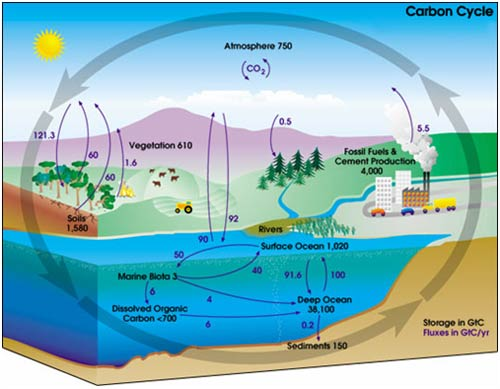
In the IPCC 4th Assessment Report glossary, “lifetime” has several related meanings. The most relevant one is:
“Turnover time (T) (also called global atmospheric lifetime) is the ratio of the mass M of a reservoir (e.g., a gaseous compound in the atmosphere) and the total rate of removal S from the reservoir: T = M / S. For each removal process, separate turnover times can be defined. In soil carbon biology, this is referred to as Mean Residence Time.”
In other words, life time is the average time an individual particle spends in a given box. It is calculated as the size of box (reservoir) divided by the overall rate of flow into (or out of) a box. The IPCC Third Assessment Report 4.1.4 gives more details.
In the carbon cycle diagram above, there are two sets of numbers. The black numbers are the size, in gigatonnes of carbon (GtC), of the box. The purple numbers are the fluxes (or rate of flow) to and from a box in gigatonnes of carbon per year (Gt/y).
A little quick counting shows that about 200 Gt C leaves and enters the atmosphere each year. As a first approximation then, given the reservoir size of 750 Gt, we can work out that the residence time of a given molecule of CO2 is 750 Gt C / 200 Gt C y-1 = about 3-4 years. (However, careful counting up of the sources (supply) and sinks (removal) shows that there is a net imbalance; carbon in the atmosphere is increasing by about 3.3 Gt per year).
It is true that an individual molecule of CO2 has a short residence time in the atmosphere. However, in most cases when a molecule of CO2 leaves the atmosphere it is simply swapping places with one in the ocean. Thus, the warming potential of CO2 has very little to do with the residence time of CO2.
What really governs the warming potential is how long the extra CO2 remains in the atmosphere. CO2 is essentially chemically inert in the atmosphere and is only removed by biological uptake and by dissolving into the ocean. Biological uptake (with the exception of fossil fuel formation) is carbon neutral: Every tree that grows will eventually die and decompose, thereby releasing CO2. (Yes, there are maybe some gains to be made from reforestation but they are probably minor compared to fossil fuel releases).
Dissolution of CO2 into the oceans is fast but the problem is that the top of the ocean is “getting full” and the bottleneck is thus the transfer of carbon from surface waters to the deep ocean. This transfer largely occurs by the slow ocean basin circulation and turn over (*3). This turnover takes 500-1000ish years. Therefore a time scale for CO2 warming potential out as far as 500 years is entirely reasonable (See IPCC 4th Assessment Report Section 2.10).
21.1.2 Carbon Cycle
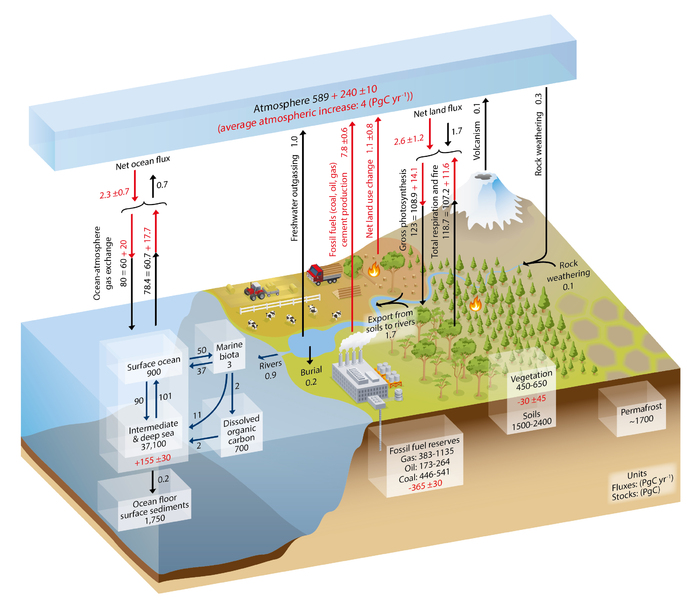
Figure: Simplified schematic of the global carbon cycle. Numbers represent reservoir mass, also called ‘carbon stocks’ in PgC (1 PgC = 10 15 gC) and annual carbon exchange fluxes (in PgC yr –1 ). Black numbers and arrows indicate reservoir mass and exchange fluxes estimated for the time prior to the Industrial Era, about 1750 (see Section 6.1.1.1 for references). Fossil fuel reserves are from GEA (2006) and are consistent with numbers used by IPCC WGIII for future scenarios. The sediment storage is a sum of 150 PgC of the organic carbon in the mixed layer (Emerson and Hedges, 1988) and 1600 PgC of the deep-sea CaCO 3 sediments available to neutralize fossil fuel CO 2 (Archer et al., 1998). Red arrows and numbers indicate annual ‘anthropogenic’ fluxes averaged over the 2000–2009 time period. These fluxes are a perturbation of the carbon cycle during Industrial Era post 1750. These fluxes (red arrows) are: Fossil fuel and cement emissions of CO 2 (Section 6.3.1), Net land use change (Section 6.3.2), and the Average atmospheric increase of CO 2 in the atmosphere, also called ‘CO 2 growth rate’ (Section 6.3). The uptake of anthropogenic CO 2 by the ocean and by terrestrial ecosystems, often called ‘carbon sinks’ are the red arrows part of Net land flux and Net ocean flux. Red numbers in the reservoirs denote cumulative changes of anthropogenic carbon over the Industrial Period 1750–2011 (column 2 in Table 6.1). By convention, a positive cumulative change means that a reservoir has gained carbon since 1750. The cumulative change of anthropogenic carbon in the terrestrial reservoir is the sum of carbon cumulatively lost through land use change and carbon accumulated since 1750 in other ecosystems (Table 6.1). Note that the mass balance of the two ocean carbon stocks Surface ocean and Intermediate and deep ocean includes a yearly accumulation of anthropogenic carbon (not shown). Uncertainties are reported as 90% confidence intervals. Emission estimates and land and ocean sinks (in red) are from Table 6.1 in Section 6.3. The change of gross terrestrial fluxes (red arrows of Gross photosynthesis and Total respiration and fires) has been estimated from CMIP5 model results (Section 6.4). The change in air–sea exchange fluxes (red arrows of ocean atmosphere gas exchange) have been estimated from the difference in atmospheric partial pressure of CO 2 since 1750 (Sarmiento and Gruber, 2006). Individual gross fluxes and their changes since the beginning of the Industrial Era have typical uncertainties of more than 20%, while their differences (Net land flux and Net ocean flux in the figure) are determined from independent measurements with a much higher accuracy (see Section 6.3). Therefore, to achieve an overall balance, the values of the more uncertain gross fluxes have been adjusted so that their difference matches the Net land flux and Net ocean flux estimates. Fluxes from volcanic eruptions, rock weathering (silicates and carbonates weathering reactions resulting into a small uptake of atmospheric CO 2 ), export of carbon from soils to rivers, burial of carbon in freshwater lakes and reservoirs and transport of carbon by rivers to the ocean are all assumed to be pre-industrial fluxes, that is, unchanged during 1750–2011. Some recent studies (Section 6.3) indicate that this assumption is likely not verified, but global estimates of the Industrial Era perturbation of all these fluxes was not available from peer-reviewed literature. The atmospheric inventories have been calculated using a conversion factor of 2.12 PgC per ppm (Prather et al., 2012).
21.1.3 Methane
The last mass extinction of life on earth, where 95% of species disappeared, was due to methane-induced rapid warming of the atmosphere (Lee, 2014; Brand et al, 2016).
Bendell (2018) Deep Adaption: A Map for Navigating Climate Tradegy (pdf)
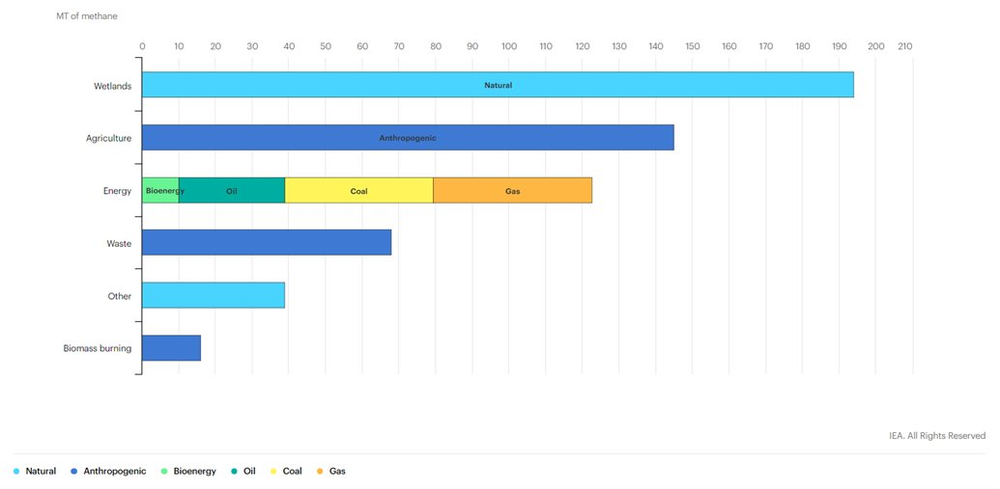
Methane, the largest component of natural gas, is sometimes called a “short-lived climate pollutant” because it remains in the atmosphere for far less time than carbon dioxide, which can remain in the atmosphere for hundreds of years. But methane is also a climate “super-pollutant,” 86 times more potent than carbon dioxide at warming the atmosphere over a 20-year period.
Sources of methane include wetlands, rice paddies, livestock, biomass burning, organic waste decomposition and fossil fuel drilling and transport.
James Hansen
The methane (CH4) growth rate[3] is shocking. A CH4 increase causes tropospheric ozone (O3) and stratospheric water vapor (H2O) to also increase. Including these indirect effects, the climate forcing by observed CH4 growth is half as large as the climate forcing by CO2.
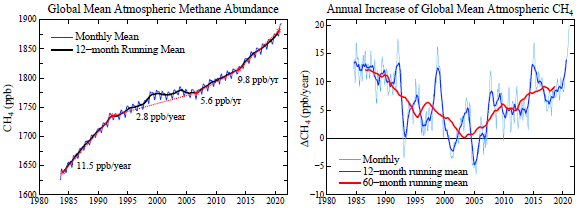
After CH4 nearly stabilized early this century, growth has returned and recently accelerated to its highest rate in the period of accurate global data, with increased growth at least in part as a result of “fracking” for gas and reliance on gas as the complement to intermittent renewable energies.
21.1.3.1 Global Methane Assessment
The Global Methane Assessment shows that human-caused methane emissions can be reduced by up to 45 per cent this decade. Such reductions would avoid nearly 0.3°C of global warming by 2045 and would be consistent with keeping the Paris Climate Agreement’s goal to limit global temperature rise to 1.5 degrees Celsius (1.5˚C) within reach.
The assessment, for the first time, integrates the climate and air pollution costs and benefits from methane mitigation. Because methane is a key ingredient in the formation of ground-level ozone (smog), a powerful climate forcer and dangerous air pollutant, a 45 per cent reduction would prevent 260 000 premature deaths, 775 000 asthma-related hospital visits, 73 billion hours of lost labour from extreme heat, and 25 million tonnes of crop losses annually.
21.1.3.2 Cut Methane Now
Methane is the biggest and really the only lever we have to slow temperature rise during the next two decades.
Methane’s potency and short atmospheric life make it a key greenhouse gas for policy makers to focus on as a way to combat global warming in the near term because the impact of those cuts will be felt almost immediately.
“If we cut methane emissions substantially during the 2020s, the abundance or concentration in the atmosphere will also drop rapidly during the 2020s,” said Drew Shindell, an earth science professor at Duke University. “If we cut CO2 emissions, it takes a long time for actual concentrations to drop, and then longer for the climate to adjust.”
21.1.3.3 Spotting Methane from Space
Methane is a key driver of climate change, with 80 times the global warming impact of carbon dioxide over a 20-year period. But methane only lingers in the atmosphere for about nine years, compared to a century for CO2.
That means reducing methane emissions from oil and gas wells and pipelines, livestock operations, landfills and other sources around the world will have an outsize impact on reducing global warming.
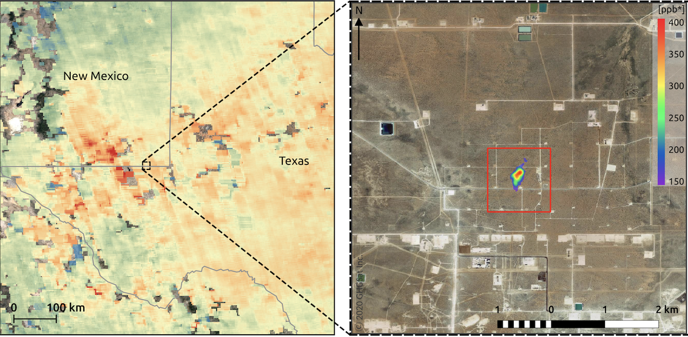
Two separate efforts to launch satellites that can scan the globe for methane emissions at a scope and level of detail not possible before, and to share their data with the public.
The first is MethaneSat, a subsidiary of the Environmental Defense Fund that is set to launch its satellite in 2022 and start delivering data in 2023. MethaneSat will be able to scan 200-kilometer-wide swaths of the earth with spectrometers that can detect methane at concentrations of 2 to 3 parts per billion, down to resolutions of about 100 meters by 400 meters. This will be the best performance of any satellite-based methane tracking technology yet launched.
In comparison, the Tropomi sensors on the European Space Agency’s Copernicus Sentinel satellite can detect about 11 parts per billion at resolutions of 7 kilometers, and the sensors on satellites operated by Canadian-based company GHGSat can capture about 55 parts per billion, albeit at much tighter spatial dimensions, down to roughly 25 meters square.
MethaneSat will be able to capture leaks as low as 5 kilograms per hour per square kilometer.
Newly released research finds that roughly half of global methane emissions can be cut over the next decade at no net cost. Of that low-cost reduction potential, 80 percent could come from the global oil and gas industries.
21.1.4 Methane Reservoir Laptev Sea
Methane bubbles regularly reach the surface of the Laptev Sea in the East Siberian Arctic Ocean (ESAO), each of them a small blow to our efforts to mitigate climate change. The source of the methane used to be a mystery, but a joint Swedish-Russian-U.S. investigation recently discovered that an ancient gas reservoir is responsible for the bubbly leaks.
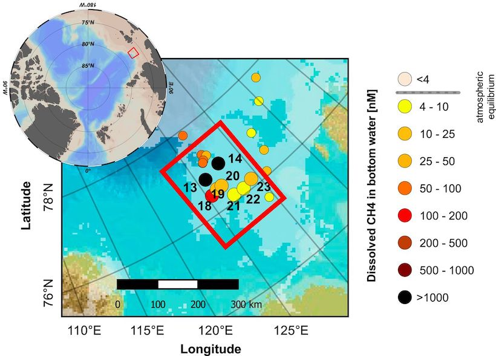
Methane in the Laptev Sea is stored in reservoirs below the sea’s submarine permafrost or in the form of methane hydrates—solid ice-like structures that trap the gas inside. It is also produced by microbes in the thawing permafrost itself. Not all of these sources are created equal: Whereas microbial methane is released in a slow, gradual process, disintegrating hydrates and reservoirs can lead to sudden, eruptive releases.
Methane is escaping as the Laptev’s submarine permafrost is thawed by the relative warmth of overlying seawater. With an even stronger greenhouse effect than carbon dioxide, methane releases into the atmosphere could substantially amplify global warming.
The source of the methane was an old reservoir, deep below the permafrost. The big finding was that we really have something that’s coming out from a deep pool. As the permafrost thaws, it opens up new pathways that allow methane to pass through. There is a risk that this methane release might increase, so it will eventually have a sizable effect on the climate.
It is quite plausible that there are other sources—the thawing permafrost or the hydrates that can be the major source of methane in other parts of this enormous system.
The permafrost is a closed lid over the seafloor that’s keeping everything in place. And now we have holes in this lid.
21.1.5 Methane (other)
Guardian
Another setback has arisen in the attempt to neutralise methane as it escapes from beneath melting Arctic ice. Methane bubble plumes are increasingly being seen in the Arctic, and Wadhams is frustrated that the Intergovernmental Panel on Climate Change (IPCC) has not yet accepted his theory that, as the ice melts, we could face a catastrophic escape of methane that has been stored for 20,000 years. Estimates, he says, range from 50 to 700 gigatonnes, which could “cause maybe a degree [centigrade] of warming, more or less instantly”, bringing forward by 15–35 years the average date at which the global mean temperature rise exceeds 2°C above pre-industrial levels.
The best geoengineering prevention for that relies, again, on the ocean. “If you blow a fine powder, or aerosol, of an iron salt called ferric chloride over the sea surface in the place where methane is bubbling out, it reacts with the methane, producing ferric hydroxide, which dissolves in the water,” he says.
Frustratingly for the theory’s backers, a test voyage this year by the University of Copenhagen found no evidence that it could work efficiently enough to remove the required amounts of the gas.
21.2 Aerosols
Hansen
The global warming acceleration is due to the one huge climate forcing that we have chosen not to measure: the forcing caused by imposed changes of atmospheric aerosols.
It’s a shame that we are not measuring the aerosol climate forcing to take advantage of this vast geophysical experiment to improve our understanding. The human-made aerosol forcing is almost as large as the CO2 forcing, but it is of the opposite sign, i.e., aerosols cause cooling.
Aerosols cause cooling by reflecting sunlight to space, thus by itself an increase of aerosols causes a temporary energy imbalance – more energy going out than coming in. Earth restores energy balance by cooling off, thus reducing heat radiation to space.
The aerosol climate forcing is complex, as the largest part of their effect seems to be via their role as cloud condensation nuclei. Added condensation nuclei tend to make the average cloud particle smaller; that tends to make brighter, longer-lived clouds, but it’s a complicated story.
We have so far only felt a fraction of the eventual warming due to the presumed decrease of aerosols of the past several years.
in the absence of adequate aerosol measurements – let’s use Earth’s measured energy imbalance to estimate the impact of aerosol reductions on global warming. Earth’s energy imbalance is measured to a good accuracy via precise monitoring of the rising global ocean temperature because the ocean is the repository for about 90 percent of the excess energy. Von Schuckmann et al. (2020)[4] report that the average imbalance over the period 1971-2018 was 0.47 ±0.1 W/m2, but in period 2010-2018 the imbalance was 0.87 ±0.1 W/m2.
Additional information on the energy imbalance is provided by combining the absolute calibration provided by measuring the change in the ocean heat content with the spatial and temporal information provided by satellite-borne radiometers. The CERES (Clouds and the Earth’s Radiant Energy System) instruments[5] measure outgoing radiation – both reflected sunlight and emitted terrestrial heat radiation. CERES cannot measure the tiny imbalance between the incoming and outgoing fluxes of radiation, but the stability of its sensors is sufficient to infer valuable information about the planet’s energy imbalance.
Specifically, the CERES data – in addition to having temporal variation of Earth’s energy imbalance consistent with the ocean data of von Schuckmann et al. – show that most of the increased imbalance since 2015 is due to an increase of absorbed solar energy, i.e., a decrease in Earth’s reflectivity. That is consistent with the expectation that the largest effect of aerosols on Earth’s radiation balance and climate is via their effect on clouds.
We can only infer that Earth’s energy imbalance – which was less than or about half a watt per square meter during 1971-2015 – has approximately doubled to about 1 W/m2 since 2015. This increased energy imbalance is the cause of global warming acceleration. We should expect the global warming rate for the quarter of a century 2015-2040 to be about double the 0.18°C/decade rate during 1970-2015.
21.3 Ozone Layer
21.3.1 Artic Ozone Hole
Berwyn
The ozone layer, Earth’s protection against intense ultraviolet radiation, is at risk, despite the progress made in protecting atmospheric ozone by the 1987 Montreal Protocol.
Warming of the surface of the Arctic is matched by a colder polar vortex high in the atmosphere, which is speeding the breakdown of the Earth’s shield against ultraviolet rays.
As greenhouse gases heated the surface of the planet, the researchers said, they have also, during the past 50 years, cooled the upper layers of the atmosphere over the Arctic. In the colder stratosphere, long-lived pollutants like chlorofluorocarbons and halons from refrigerants and industrial solvents break down and release chlorine and bromine, which react with sunlight to destroy ozone.
Concentrations of those pollutants in the atmosphere have decreased by about 10 percent since the ban, allowing the ozone layer above Antarctica to heal over the past 20 years, but progressively colder temperatures in the stratosphere above the Arctic are increasing the destruction of ozone in that region
Berwyn (2020) Ozone Alarm in the High North - InsideClimateNews
von der Gathen - Abstract
Chemical loss of Arctic ozone due to anthropogenic halogens is driven by temperature, with more loss occurring during cold winters favourable for formation of polar stratospheric clouds (PSCs). We show that a positive, statistically significant rise in the local maxima of PSC formation potential (PFPLM) for cold winters is apparent in meteorological data collected over the past half century. Output from numerous General Circulation Models (GCMs) also exhibits positive trends in PFPLM over 1950 to 2100, with highest values occurring at end of century, for simulations driven by a large rise in the radiative forcing of climate from greenhouse gases (GHGs). We combine projections of stratospheric halogen loading and humidity with GCM-based forecasts of temperature to suggest that conditions favourable for large, seasonal loss of Arctic column O3 could persist or even worsen until the end of this century, if future abundances of GHGs continue to steeply rise.
von der Gathen (2021) Climate change favours large seasonal loss of Arctic ozone
21.4 Stratosphere shrinking
The thickness of the atmospheric layer has contracted by 400 metres since the 1980s, the researchers found, and will thin by about another kilometre by 2080 without major cuts in emissions. The changes have the potential to affect satellite operations, the GPS navigation system and radio communications.
The discovery is the latest to show the profound impact of humans on the planet. In April, scientists showed that the climate crisis had shifted the Earth’s axis as the massive melting of glaciers redistributes weight around the globe.
The stratosphere extends from about 20km to 60km above the Earth’s surface. Below is the troposphere, in which humans live, and here carbon dioxide heats and expands the air. This pushes up the lower boundary of the stratosphere. But, in addition, when CO2 enters the stratosphere it actually cools the air, causing it to contract.
Pisoft Abstract
Rising emissions of anthropogenic greenhouse gases (GHG) have led to tropospheric warming and stratospheric cooling over recent decades. As a thermodynamic consequence, the troposphere has expanded and the rise of the tropopause, the boundary between the troposphere and stratosphere, has been suggested as one of the most robust fingerprints of anthropogenic climate change. Conversely, at altitudes above ~55 km (in the mesosphere and thermosphere) observational and modeling evidence indicates a downward shift of the height of pressure levels or decreasing density at fixed altitudes. The layer in between, the stratosphere, has not been studied extensively with respect to changes of its global structure. Here we show that this atmospheric layer has contracted substantially over the last decades, and that the main driver for this are increasing concentrations of GHG. Using data from coupled chemistry-climate models we show that this trend will continue and the mean climatological thickness of the stratosphere will decrease by 1.3 km following representative concentration pathway 6.0 by 2080. We also demonstrate that the stratospheric contraction is not only a response to cooling, as changes in both tropopause and stratopause pressure contribute. Moreover, its short emergence time (less than 15 years) makes it a novel and independent indicator of GHG induced climate change.
21.4.1 N2O
The growth rate of the third strongest greenhouse gas, N2O, does not provide any good news. Its growth rate continues to increase.
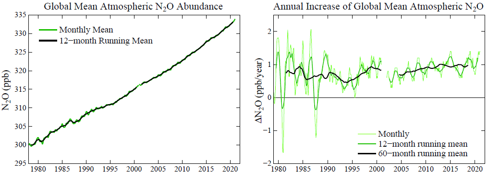
21.5 Contrails
Pearce
New research shows that condensation trails from aircraft exhaust are playing a significant role in global warming. Experts are concerned that efforts to change aviation engine design to reduce CO2 emissions could actually create more contrails and raise daily temperatures even more.
Like regular cirrus clouds, contrail clouds trap heat radiating from the earth’s surface, causing warming in the air below.
Contrails are human-made clouds. They form in air above about 25,000 feet, when that air is moist and colder than -40 degrees Celsius. Like regular clouds, they arise when water vapor, in this case from the engine exhausts, forms into droplets by condensing onto particles in the air, in this case soot from the engines. Within a second, the water droplets freeze to make tiny ice crystals that show up visually as contrails.
If the air is not cool or moist enough, contrails may not form or may disappear quickly. But at other times, they stick around – either as tight, white lines in the sky, like chalk marks, or gradually spreading to create thin layers of ice clouds. They are similar to natural cirrus clouds and are often called contrail cirrus clouds.
Contrail cirrus clouds cover around 0.6 percent of the global skies at any one time — nine times the amount covered by contrails themselves. In areas with high amounts of air traffic, they can merge to cover as much as 38,000 square miles, roughly the size of Indiana, and last for many hours or even days.

Like regular cirrus clouds, contrail cirrus clouds have two competing effects on climate. They shade us by reflecting incoming sunlight back into space. But they also trap heat radiating from the earth’s surface, so causing warming in the air below.
During the day, cooling compensates part of the warming. But at night, with no sunlight, only the warming effect operates. Red-eye flights are a red light for climate.
The average effect on the earth’s radiation balance of contrails and contrail cirrus is 50 milliwatts per square meter of the earth’s surface. The figure is for 2006, the base year for the U.S. Federal Aviation Administration dataset used by the authors. It was double the 24 milliwatts from the CO2 that had accumulated in the atmosphere from a century of aviation (and is a significant part of a total anthropogenic effect at the time of around 1,600 milliwatts).
One is to divert aircraft away from air where contrails are likely to form. This can be done vertically by changing altitude, or horizontally by detouring around the problem air. But aircraft currently fly the shortest routes and at altitudes that minimize fuel burn …controlling contrail formation in this way… will almost certainly lead to increases in aircraft CO2 emissions.
A second approach to minimizing contrails is to change fuels — from kerosene-based fuels to biofuels, hydrogen, liquid natural gas, or even electricity.
Even if fuel changes reduce soot emissions, researchers estimate contrail production will increase by a factor of 2.8 by 2050.
21.6 Clouds
Ceppi Significance
A key challenge of our time is to accurately estimate future global warming in response to a doubling of atmospheric carbon dioxide—a number known as the climate sensitivity. This number is highly uncertain, mainly because it remains unclear how clouds will change with warming. Such changes in clouds could strongly amplify or dampen global warming, providing a climate feedback. Here, we perform a statistical learning analysis that provides a global observational constraint on the future cloud response. This constraint supports that cloud feedback will amplify global warming, making it very unlikely that climate sensitivity is smaller than 2 °C.
Ceppi Abstract
Global warming drives changes in Earth’s cloud cover, which, in turn, may amplify or dampen climate change. This “cloud feedback” is the single most important cause of uncertainty in Equilibrium Climate Sensitivity (ECS)—the equilibrium global warming following a doubling of atmospheric carbon dioxide. Using data from Earth observations and climate model simulations, we here develop a statistical learning analysis of how clouds respond to changes in the environment. We show that global cloud feedback is dominated by the sensitivity of clouds to surface temperature and tropospheric stability. Considering changes in just these two factors, we are able to constrain global cloud feedback to 0.43 ± 0.35 W⋅m−2⋅K−1 (90% confidence), implying a robustly amplifying effect of clouds on global warming and only a 0.5% chance of ECS below 2 K. We thus anticipate that our approach will enable tighter constraints on climate change projections, including its manifold socioeconomic and ecological impacts.
Ceppi (2021) Observational evidence that cloud feedback amplifies global warming
21.7 Attributing Emissions
21.7.1 Norway’s Responsibility
In real life responsibility is more than what is legally bindingThe emissions of CO2 that occur within Norway’s territory are dwarfed by the emissions that result from combustion of all the oil and gas Norway produces. Because these fossil fuels are exported before being combusted, the emissions are allocated to the accounts of other countries. If Norway had generated electricity from the gas and then exported the electricity, for example, then emissions from that electricity generation would be allocated to Norway’s accounts. There is therefore an element of artificiality associated with this allocation. It takes two to tango.
Norway’s territorial emissions of CO2 were about 42 Mt in 2019, and over 1971–2019 totalled about 1.9 Gt. In comparison, emissions from Norwegian oil and gas since 1971 have been about 16 Gt. A similar amount (~15 Gt) will be emitted if all remaining Norwegian oil and gas resources are extracted from the continental shelf.
In 2019, emissions from Norwegian oil and gas amounted to 84 tonnes of CO2 for every person in Norway.
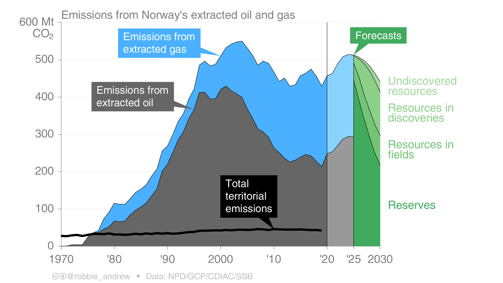
Norways Export Emissions (Robbie Andrew)
In Norwegian politics, there’s been a very successful attempt to separate the discussion of oil policy from the discussion of climate policy. The two were never really tightly linked [in the country] until roughly the last decade, and this division has become increasingly difficult to maintain.
Norwegian politicians also haven’t been alone in creating the conditions that made this division possible. They’ve been helped immensely by the international climate regime.
From the very beginning of international climate policy, there was this agreement that countries had to account for the emissions that they create when they burn fossil fuels. All the responsibility was placed on the demand side, not the supply side, which was very convenient for Norway.
Europe is the primary market for Norway’s oil and gas. But determining the climate effects of Norwegian production is not straightforward. One study has estimated a clear climate benefit from reducing oil output, but the market is complex and the result really depends on your assumptions about how other actors will behave and how the market will evolve over time.
The big irony here is that Norway is a fairly large fossil-fuel producer, but we use relatively few fossil fuels directly in our energy use. Nearly all of our electricity has for a long time come from hydropower. In most years, we even export quite a lot of renewable electricity to our neighbors. The only place where fossil fuels are used to directly produce energy is to run the platforms offshore. They use gas to run the turbines to get the energy needed for oil and gas production.
The government’s new climate plan, which was unveiled just a few days ago, does include a number of new and more aggressive measures to reduce Norway’s domestic emissions. The proposal to increase the already quite high CO2 tax on offshore emissions came as something of a surprise, and it is likely to pass even if it is currently being challenged by the industry.
However, it is important to keep in mind that this proposal only targets the production-related emissions of Norwegian oil, not the level of oil that is being extracted and exported. As such, it is in line with the historical separation between climate and oil policymaking, which tends to focus only on emissions happening within Norway and exclude any concern for the climate impact of exported oil and gas.
The Norwegian paradox has worked out fairly well up until the last few years because there has been little focus on the production of fossil fuels, and because Norway is small enough to avoid the scrutiny that some larger nations face. But this is quickly changing, both in the domestic and international political discussion.
There is now a lot more focus on the supply side of fossil fuels than 10 years ago, with several countries like Denmark announcing an end to drilling and new research showing a mismatch between planned fossil-fuel production and ideas such as a “non-proliferation treaty” for fossil fuels being floated. The treaty would bring the world together in agreeing to end the use of fossil fuels much like the UN came together to curb the spread of nuclear weapons.
This will make it increasingly hard for Norway to hold on to a leadership claim as long as oil production keeps being expanded into new areas.
21.7.2 Global North vs South Responsibility
The global North is responsible for 92% of total excess carbon dioxide emissions. Climate breakdown is colonial in character and ultimately requires an anti-colonial struggle in response. (Jason Hickel)
Fig. by (???)
21.7.3 Concrete / Cement
CanaryMedia
Concrete is everywhere, and it accounts for 7 to 8 percent of global carbon emissions.
Quick facts about clean concrete for people who don’t work with concrete
- Cement is the most carbon-intensive component in concrete. One easy way to lower carbon impact is to stop the common industrial practice of chucking extra cement in the mix. Apparently, this is widespread and results in more cement in the finished product than what the engineers actually asked for.
- Governments are the biggest purchasers of concrete (think highways, roads, bridges). If they start demanding carbon accounting or giving preference to lower-carbon concrete suppliers, it would have an outsize influence on the industry. A bill now up before California’s legislature would do just that.
- Another bill in California would cut carbon from concrete by 40 percent by the end of 2035. This one has support from Democrats, Republicans, industry and environmental groups. Crucially, it includes a “border adjustment mechanism,” which means the carbon limits apply to imported concrete. That ensures a level playing field for concrete suppliers if the law goes into effect.
(Canary Media Newsletter by Julian Spector 1 July 2021 (No Link))